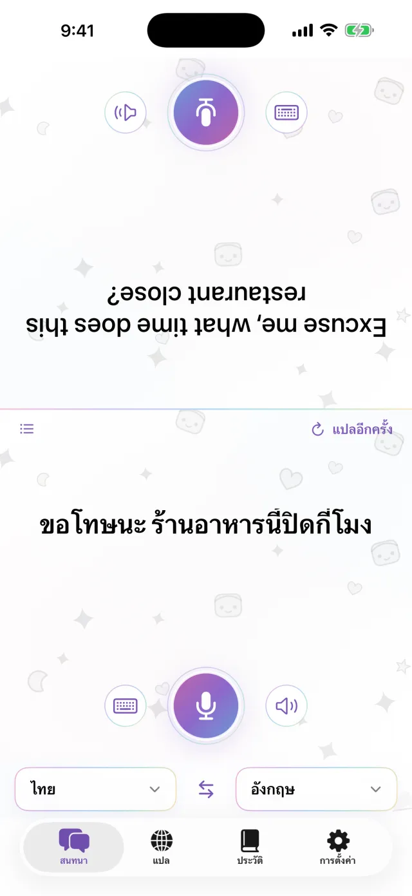
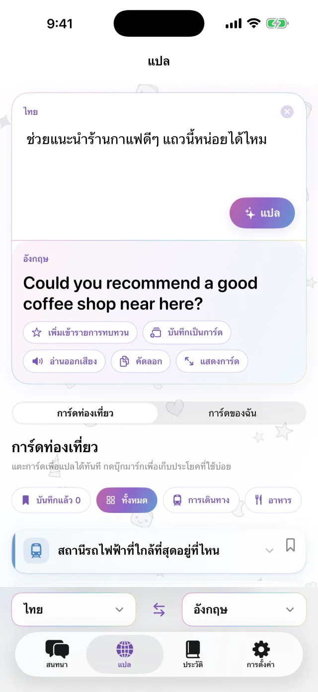
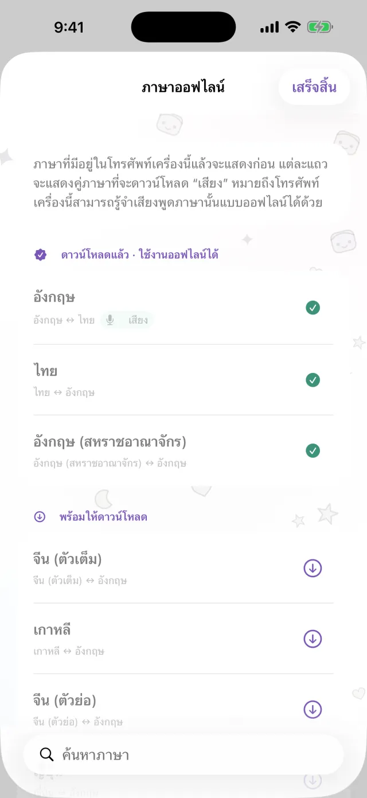
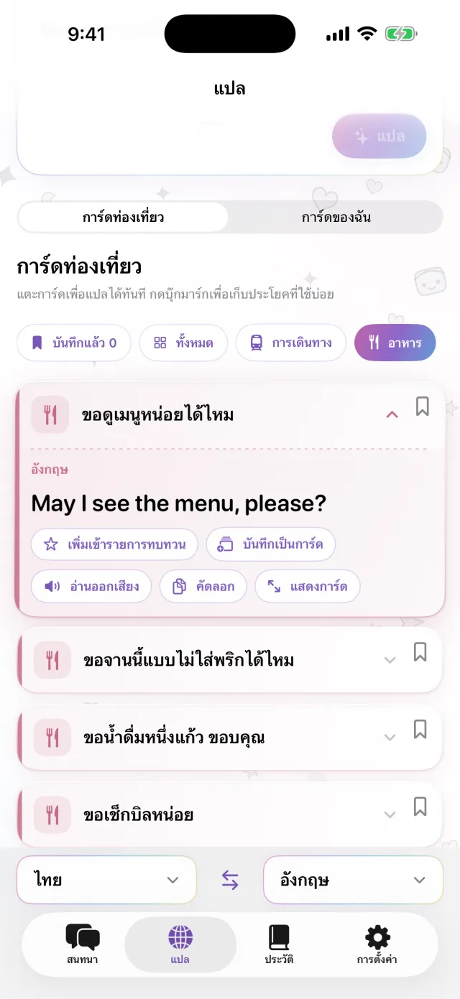
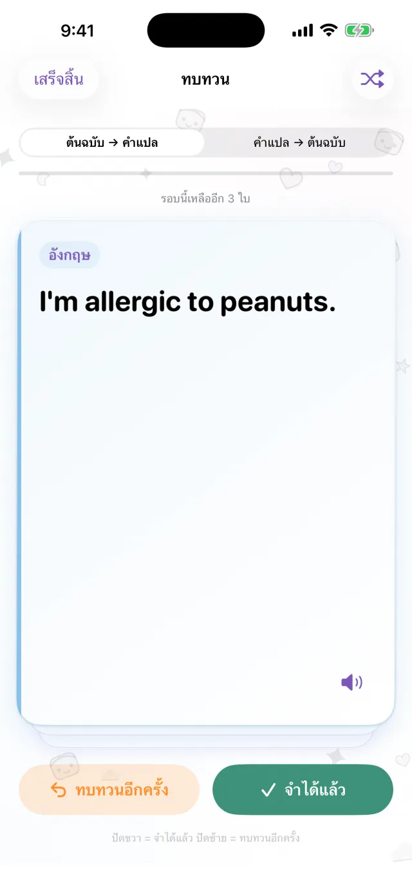

แอปแปลภาษาสำหรับ iPhone
แอปแปลภาษาสำหรับ iPhone
วาง iPhone ไว้ตรงกลาง
แล้วคุยกันได้เลย
แตะไมค์แล้วพูด คำแปลจะขึ้นที่ครึ่งหน้าจออีกฝั่ง หันเข้าหาอีกฝ่าย เมื่ออีกฝ่ายตอบก็ใช้วิธีเดียวกัน ดาวน์โหลดภาษาไว้ก่อน ก็ใช้ได้โดยไม่ต้องเชื่อมต่ออินเทอร์เน็ต
เร็วๆ นี้บน App Store- ประมาณ 20 ภาษา
- ใช้ออฟไลน์ได้หลังดาวน์โหลด
- ไม่ต้องสมัครสมาชิก

พิมพ์ข้อความ
พูดออกเสียงไม่สะดวก ก็พิมพ์ได้
ในที่เงียบ หรือเมื่ออีกฝ่ายพูดเร็วเกินไป พิมพ์ข้อความได้เลย คำแปลขยายเต็มหน้าจอได้ แล้วยื่นให้อีกฝ่ายดู
- คัดลอกได้ หรือสั่งให้อ่านออกเสียงได้
- สลับสองภาษาได้ด้วยการแตะครั้งเดียว

ออฟไลน์
ไม่มีอินเทอร์เน็ตก็แปลได้
การแปล การรู้จำเสียงพูด และการอ่านออกเสียง ทำงานบน iPhone ของคุณทั้งหมด ดาวน์โหลดภาษาที่ต้องใช้ก่อนเดินทาง ก็ใช้ได้บนเครื่องบิน หรือก่อนซื้อซิมการ์ด สิ่งที่คุณพูดจะไม่ถูกส่งไปยังเซิร์ฟเวอร์ และจะไม่เก็บเสียงบันทึกไว้

การ์ดประโยค
บันทึกประโยคที่ต้องพูดบ่อย ๆ
ที่อยู่โรงแรม อาหารที่แพ้ สถานีที่กำลังหา บันทึกไว้เป็นการ์ด ก็ไม่ต้องพิมพ์ซ้ำ แตะการ์ดใบนั้น ก็แปลเป็นภาษาของอีกฝ่ายให้ทันที มีการ์ดสำเร็จรูปเกี่ยวกับการเดินทาง การกินอาหาร ที่พัก และการช้อปปิ้งให้ในแอป

Pro
ทบทวนประโยคที่บันทึกไว้ตามกำหนด
แตะรูปดาวที่ประโยคเพื่อบันทึกไว้ทบทวน ถ้าจำได้ ประโยคจะกลับมาอีกครั้งหลัง 1, 3, 7, 14 และ 30 วัน ถ้ายังจำไม่ได้ ก็จะแสดงอีกครั้งในวันเดียวกัน ทบทวนได้ทั้งจากต้นฉบับไปคำแปล หรือจากคำแปลไปต้นฉบับ ส่วนนี้ใช้ได้เฉพาะ Pro

ใช้ได้ในสถานการณ์เหล่านี้
- สั่งอาหารที่ร้านเล็ก ๆ
- บอกที่อยู่กับคนขับแท็กซี่
- อธิบายอาการแพ้ที่ร้านขายยา
- ฝากกระเป๋าที่เคาน์เตอร์โรงแรม
- ถามทาง
ดูวิธีใช้ใน 30 วินาที
วิดีโอนี้เปิดโหมดเครื่องบินอยู่
ข้อมูลเบื้องต้น
| ภาษา | ประมาณ 20 ภาษา (ภาษาที่ Apple รองรับการแปลบนอุปกรณ์) |
|---|---|
| ออฟไลน์ | ใช้ได้ หลังดาวน์โหลดภาษา |
| การป้อนด้วยเสียง | ใช้ได้ บางภาษาพิมพ์ได้อย่างเดียว |
| บัญชี | ไม่ต้องใช้ |
| ราคา | ใช้ฟรี Pro มีค่าใช้จ่ายเพิ่มเติม (ดูด้านล่าง) |
| ระบบที่รองรับ | iPhone ที่ใช้ iOS 18 ขึ้นไป |
- ครั้งแรกต้องเชื่อมต่ออินเทอร์เน็ตเพื่อดาวน์โหลดภาษา
- ราคาจะแสดงเป็นสกุลเงินของคุณใน App Store
ฟรีและ Pro
ฟรี
- สนทนาแบบเห็นหน้ากัน
- พิมพ์ข้อความและแสดงเต็มหน้าจอ
- แปลแบบออฟไลน์
- การ์ดท่องเที่ยว และการ์ดของคุณเอง 3 ใบ
- มีแบนเนอร์โฆษณาขนาดเล็ก
Pro
- ไม่มีโฆษณา
- สร้างการ์ดได้ไม่จำกัดจำนวน
- ประวัติการแปลและการทบทวนตามกำหนด
เลือกได้ทั้งรายสัปดาห์ รายเดือน หรือซื้อครั้งเดียว
ก่อนเดินทาง ดาวน์โหลดภาษาไว้ก่อน
เร็วๆ นี้บน App StoreiPhone · iOS 18 ขึ้นไป · ดาวน์โหลดฟรี · วิธีใช้แต่ละหน้าจอ